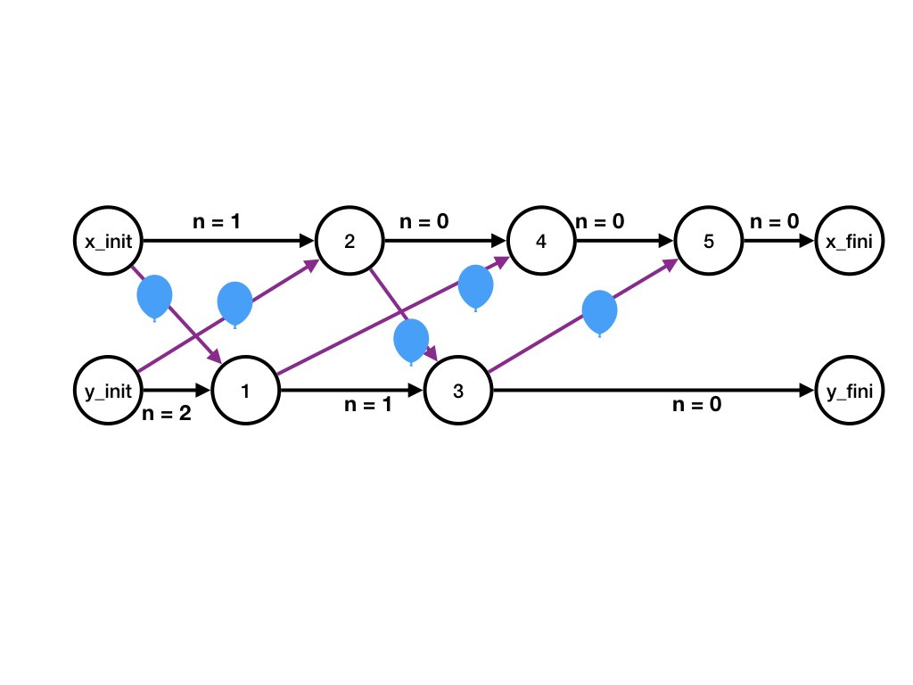
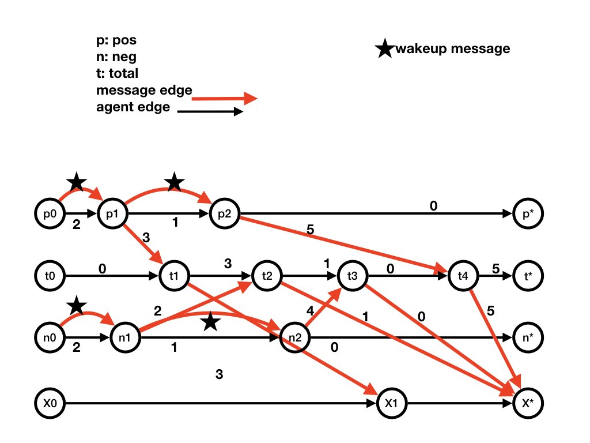

This example is a continuation from the example in
States.
Two children, X and Y, are tossing balloons to each other.
A balloon that has been tossed by X, while in the air to Y, is a
message in the channel (X, Y).
When a child gets a balloon it tosses the balloon back immediately.
Initially there is a balloon tossed by X on its way to Y and there is
also a balloon tossed by Y on its way to X.
Each child has a countdown of the number of times it tosses balloons.
Each time a child tosses a balloon it decrements its countdown value.
After a child's countdown reaches 0 the child pops balloons that it receives
(and doesn't toss popped balloons).
State
The state of a channel is the number of balloons in it.
The state of an agent (X or Y) is the countdown value nX or nY, respectively.
A Computation: A Sequence of States
An example of a sequence of state changes is as follows.
Initial State: Channel (X, Y) has one balloon and channel (Y, X) has
one balloon. And the countdown for X is 2 and the countdown for Y is
3. We represent this state by:
nX = 1, nY = 2, (X, Y) = 1, (Y, X) = 1
The sequence of steps from the initial state are as follows.
Y receives a balloon and sends it back. So the state
becomes:
nX = 1, nY = 1, (X, Y) = 0, (Y, X) = 2
X receives a balloon and sends it back. So the state
becomes
nX = 0, nY = 1, (X, Y) = 1, (Y, X) = 1
Y receives a balloon and sends it back. So the state
becomes
nX = 0, nY = 0, (X, Y) = 0, (Y, X) = 2
X receives a balloon and pops it. So the state
becomes
nX = 0, nY = 0, (X, Y) = 0, (Y, X) = 1
X receives a balloon and pops it. So the state
becomes
nX = 0, nY = 0, (X, Y) = 0, (Y, X) = 0
There are no further steps in this computation.
Dataflow of the Computation
The dataflow graph of the computation is shown in the figure.

Figure The Dataflow Graph for the Example
Agent X has a fictitious step, X_init, that initializes X's state and X's
output channels.
X also steps 2, 4, and 5 in the above computation.
X also has a fictitious final step, X_fini, that identifies X's final state and
the final state of X's input channels.
Likewise, agent Y has a fictitious step, Y_init, that initializes Y's state and Y's
output channels.
Y also steps 3, and 5 in the above computation.
Y also has a fictitious final step, Y_fini, that identifies Y's final state and
the final state of Y's input channels.
Agent Edges for Agent X
The horizontal line consisting of steps at X consists of the following
directed edges.
X_init to step 2 with label nX = 1. The label is the initial state
of X
Step 2 to step 4 with label nx = 0.
Step 4 to step 5 with label nx = 0.
Step 5 to X_fini with label nx = 0. This label is the final state of
X in the computation.
Agent Edges for Agent Y
Likewise the horizontal line cconsisting of steps at Y and consists of the following
directed edges.
Y_init to step 1 with label nY = 2. The label is the initial state of Y
Step 1 to step 3 with label nY = 1.
Step 3 to Y_fini with label nY = 0. This label is the final state of
Y in the computation.
Message Edges for Channel (X, Y)
The message edges representing messages on channel (X, Y) are as
follows.
All the messages have label "1" because each message represents a
single balloon.
X_init to step 1. This is the message in the channel in the initial
state of the computation.
Step 2 to step 3.
There are no message edges from steps at X to Y_fini because the channel (X, Y) is
empty in the final state.
Message Edges for Channel (Y, X)
The message edges representing messages on channel (Y, X) are as
follows.
All the messages have label "1" because each message represents a
single balloon.
Y_init to step 2. This is the message in the channel in the initial
state of the computation.
Step 1 to step 4.
Step 2 to step 5.
There are no message edges to X_fini because the channel (Y, X) is
empty in the final state.
The following dataflow diagram is for the computation given in
examples of computations.
The computation starting at the initial state executes steps
p1, n1, t1, p2,
t2, n2, t3, X1
where the steps are shown in the dataflow diagram.

Figure The Dataflow Diagram
In the dataflow diagram, p1 and p2 are
steps at agent pos; n1 and n2 are
steps at agent neg, t1, t2, t3 are
steps at agent total, and X1 is an
step at agent X.
Steps p0, n0, t0, X0 are the fictitious initial steps
at agents pos, neg, total, X (respectively)
that specify the initial state of the computation.
Likewise, steps p*, n*, t*, X* are the fictitious final steps
that specify the final state of the computation.
Let's look at p0 as an example of an initial step.
There is an agent edge from p0 to p1 labeled
with the state of agent pos in the initial state of the
computation.
The state of pos is given by its variable n
which is initially 2; so the edge from p0 to
p1 is labeled n = 2 which is abbreviated to
2.
Agent X has no state; it merely prints messages that it receives.
So agent edges at X have no label (or equivalently the empty label).
Let's look at X* as an example of a final step.
There are message edges labeled 1, 0, and 5 from steps at
total to X*.
This represents the state of channel (total, X*) in the
final state of the computation.
Let's look at step p1 at agent pos.
The state of pos changes from n = 2 to
n = 1.
So the output agent edge from p1 is labeled n =
1.
In step p1, pos sends a message 3 to
total and a wakeup message to itself.
So the output message edges from step p1 are labeled
wakeup (shown as a star) and 3; these message edges are to steps step
p2 and step t1, respectively, because the
messages are received in those steps.
Next
The next pages describes
Cuts in Dataflow Graphs
which are used in developing detection algorithms such as termination
detection and deadlock detection.